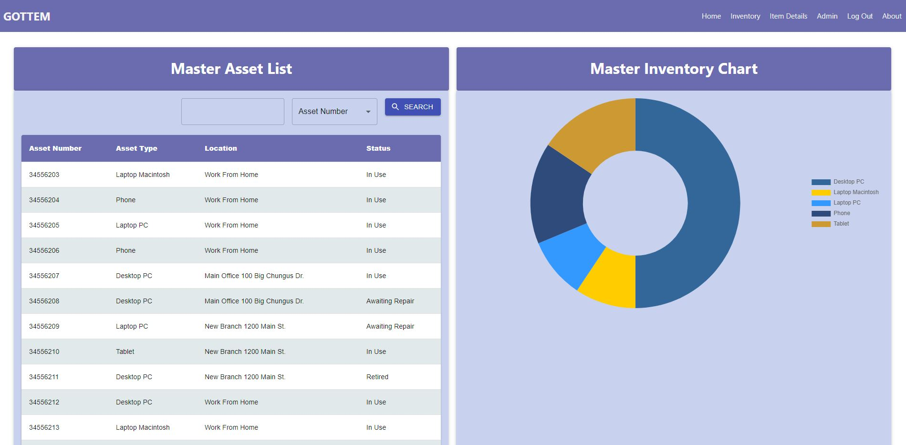
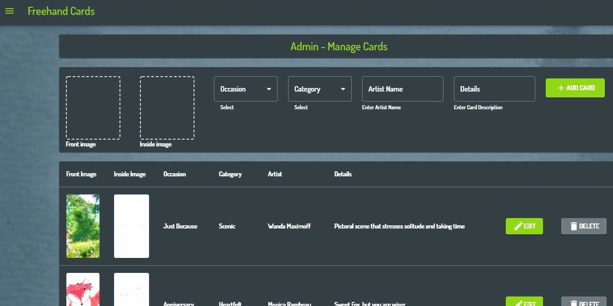
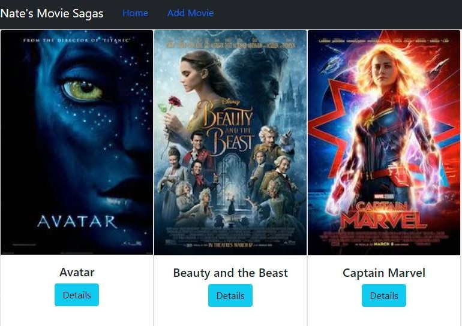
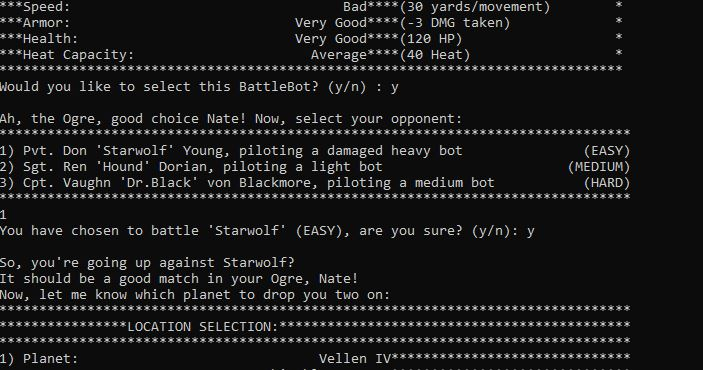

Freehand Cards is a full-stack web service to assist forgetful gift-givers in getting thoughtful cards for important people in their lives.
Responsible for implementing an image upload API, backend admin REST API, protected routes, and user authorization, as well as a scheduled emailer service.
Technologies Used: React, Redux, Node, Express, PostgreSQL, Passport, AWS S3, Nodemailer


Nate's Movie Sagas is my first full-CRUD RESTful API application. NMS provides users with a list of popular movies in an attractive UI
with clickable links information about each movie, its genres and categories, and plot details.
Technologies Used: React, Redux, Redux-Saga, Node, Express, Material-UI, and PostgreSQL.

BattleBot Arena is a C++ CLI text-based fighting game which utilizes object oriented programming techniques and text file importing to process the game engine and AI.
Technologies Used: C++, Visual Studio 2019